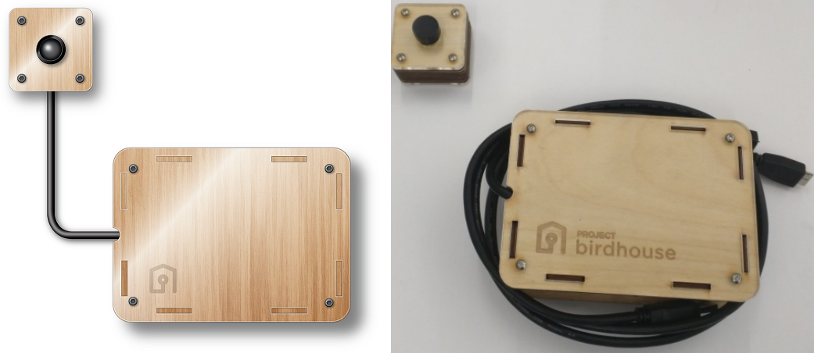
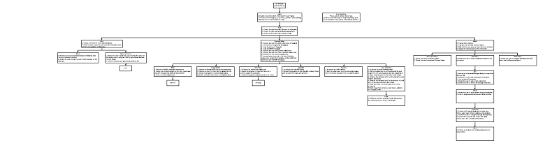

projectbirdhouse.com
May, 2016 - October, 2016
Product: A camera / computer vision based device to detect and track customer's faces in brick and mortar stores. Much like what Google Analytics provides for websites, but in real life.
Rendering of device with camera + Really mediocre photo of device with camera

With my time at Kapture wrapping up, I began asking other tech entrepreneurs if they need any help for the upcoming six months, as I had a motorcycle trip throughout the western hemisphere with Frio to Fuego planned to start then. Offers to help launch a venture capital fund, to be a web developer for an A/B testing company, and to flip houses were all considered until I heard about Project Birdhouse.
I joined on as the third person working on this, but the first full time person, only a few weeks after its conception. As a nascent company, my first challenge as project lead was to come up with a plan for how we would assess the various available hardware and software tools we might use. With this done, I got right to work researching, comparing, and testing the various available microcomputers (Arduino, Raspberry Pi, miniPC, etc), their associated cameras, and facial processing software tools that would form the basis of our product.
After testing each option in their own separate sandbox and choosing our beta toolbox, my biggest challenge of all came in putting together a cohesive Python-based system that could:
1. Input high quality images of faces in a retail environment
2. Detect if and where there are faces within the current image
3. Generate a unique ID for that face based on its defining characteristics
4. Estimate that face's age, gender, and if it bears any of a subset of common emotions
5. Concurrently and cohesively assemble that data from multiple devices into a central data store in AWS
6. Operate all of these tasks efficiently enough that a small embedded computer can complete them at a reasonable frame rate
Given that each of the software packages I was working with had been designed independently, integrating them to accomplish these tasks proved correspondingly painful.
Object oriented heirarchy, obfuscated

Warning: Technical jargon ahead.
First I built and tested two different ways of grabbing camera images, single threaded and multiprocessing. In the single threaded design the device would request an image from the camera, process it through several different tools for facial analysis, submit it to the database, and then repeat the process. In the multiprocessing architecture, there were several different subprocesses operating autonomously to complete these tasks, sharing data amongst themselves using locked queues. The multiprocessing architecture was more complicated but performed better as it maintained a smoother connection with the camera.
Second, processing an image through our facial identification neural network was costly in terms of CPU time and we wanted to ensure that we only used it if absolutely necessary. So I developed a tiered approach of facial detection to reduce the workload. We ended up running 3 overlapping facial detection algorithms to efficiently filter the images for faces. For brevity I'll describe them as: fast and inaccurate, medium, and very accurate but slow. The fast and inaccurate facial detection algorithm would run first, but tended to have quite a few false positives. If it detected anything, we would pass along the resulting subset of the image to the medium facial detection algorithm. If that one also found a face there, then we were in luck and would pass it on to the third algorithm.
Third, since we were operating this distributed computing model, I had to modify our chosen facial identification library to operate on an embedded, OpenCL-capable GPU. This required changes to the compiler, the neural network model, and our surrounding code in order to work. Implementing this change shifted a significant load of work off of our CPU, truly enabling our software to operate at an embedded level.
These technical challenges yielded >5,000 lines of completed code and they represented my day to day tasks. However, a large part of my fulfilment came from hiring our next two team members and onboarding our first beta client. Being able to work on all aspects of the business and truly feel its influence beyond my own code was (and hopefully always will be) a very rewarding experience.
Continue to read more about motorcycling around the world with Frio to Fuego.